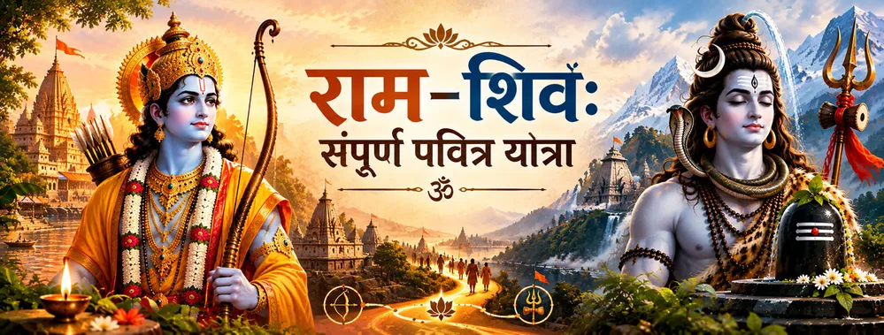

स्रोतों को ध्यान से पढ़ें
यात्रा स्रोतों के भेद को समझने से शुरू होती है। रामचरितमानस राम और शिव के बीच गहरे भक्तिपरक संबंध को स्पष्ट रूप से प्रस्तुत करता है, जबकि अन्य राम–शिव प्रसंग पौराणिक, मंदिर या क्षेत्रीय परंपराओं से जुड़े हैं।

संपूर्ण पवित्र यात्रा
राम–शिव परंपरा कोई एक अकेली कथा नहीं है। यह शास्त्र, तीर्थ, भक्ति, काव्य और जीवंत साधना से होकर गुजरने वाली अनेक परतों वाली पवित्र यात्रा है। इन परंपराओं में राम और शिव का स्मरण श्रवण, पूजा, स्तुति, पवित्र स्थलों और दिव्य नाम के स्मरण के माध्यम से होता है।
सभी स्रोत हर प्रसंग को एक ही रूप में प्रस्तुत नहीं करते। वाल्मीकि रामायण, रामचरितमानस, पौराणिक परंपराएँ, मंदिर-कथाएँ और क्षेत्रीय भक्तिसाहित्य अपनी-अपनी दृष्टि और संदर्भ रखते हैं। इसलिए संपूर्ण यात्रा का अर्थ इन परतों को साथ समझना है, न कि यह मान लेना कि वे सभी बिल्कुल समान हैं।
यात्रा की सात परतें
हर परत यह समझने का एक अलग मार्ग देती है कि हिंदू पवित्र स्मृति में राम और शिव का संबंध आज भी क्यों जीवंत है।
यात्रा स्रोतों के भेद को समझने से शुरू होती है। रामचरितमानस राम और शिव के बीच गहरे भक्तिपरक संबंध को स्पष्ट रूप से प्रस्तुत करता है, जबकि अन्य राम–शिव प्रसंग पौराणिक, मंदिर या क्षेत्रीय परंपराओं से जुड़े हैं।
रामेश्वर परंपरा राम द्वारा शिव-पूजन को रामेश्वरम् की पवित्र भूमि के केंद्र में रखती है। रामचरितमानस भी रामेश्वर प्रसंग को स्पष्ट भक्तिपरक स्थान देता है और शंकर की आराधना को राम-भक्ति से जोड़ता है।
रामचरितमानस बार-बार राम-नाम को शिव की भक्तिपरंपरा में रखता है। बालकाण्ड में शिव को राम-नाम का निरंतर जप करने वाला बताया गया है और इस उपदेश को काशी तथा मुक्ति से जोड़ा गया है।
एक बार-बार आने वाली भक्तिपरक शिक्षा यह है कि किसी एक दिव्य रूप के प्रति प्रेम दूसरे रूप के निषेध की मांग नहीं करता। मानस में शिव की श्रद्धा के साथ राम की महिमा गाई जाती है और राम-भक्ति को भी शिव के सम्मान से जोड़ा जाता है।
काशी और रामेश्वरम् इस परंपरा को दो शक्तिशाली पवित्र भू-दृश्य देते हैं। मानस में काशी शिव और राम-नाम से गहराई से जुड़ी है, जबकि रामेश्वरम् राम-कथा को शिव-पूजन और दक्षिण की तीर्थपरंपरा से जोड़ता है।
तुलसीदास और रामचरितमानस ने राम–शिव भक्ति को शक्तिशाली काव्यभाषा दी। ऐसा साहित्य केवल कथाओं को सुरक्षित नहीं रखता; वह यह भी आकार देता है कि पीढ़ियाँ उन्हें कैसे स्मरण, गान और व्याख्यायित करती हैं।
यात्रा अंततः भक्त के पास लौटती है: पवित्र कथाएँ सुनें, नाम का स्मरण करें, ईश्वर के प्रति श्रद्धा रखें, संभव हो तो तीर्थों का दर्शन करें और श्रद्धा को दैनिक आचरण में उतारें।
स्रोतों से मिलने वाली दृष्टि
रामचरितमानस राम–शिव संबंध की कुछ सबसे स्पष्ट भक्तिपरक अभिव्यक्तियाँ देता है। बालकाण्ड में शिव को राम-नाम जपते हुए बताया गया है और नाम को काशी तथा मुक्ति से जोड़ा गया है। लंकाकाण्ड में रामेश्वर प्रसंग आता है, जहाँ राम शंकर की आराधना की महिमा बताते हैं और ऐसी आराधना को भक्ति से जोड़ते हैं।
राम–शिव परंपरा के अन्य प्रसंगों को उनके अपने स्रोत-परंपरा के साथ पहचानना चाहिए। यह विशेष रूप से रामेश्वरम् की कथाओं, क्षेत्रीय मंदिर-परंपराओं और बाद की भक्तिपरक व्याख्याओं के लिए महत्वपूर्ण है। इस परंपरा की एक विशेषता यही बहुस्तरीय इतिहास है—एक ही पवित्र संबंध को अलग-अलग ग्रंथों, तीर्थों और भक्ति-रूपों में स्मरण किया जा सकता है।
Ramcharitmanas · Bala Kanda 11 • Ramcharitmanas · Bala Kanda 15 • Ramcharitmanas · Lanka Kanda 163 • Ramcharitmanas · Uttar Kanda Invocations
संपूर्ण भक्तिपथ
ध्यानपूर्वक श्रवण से आरंभ करें। राम–शिव परंपरा कथा, संवाद, काव्य और पाठ के माध्यम से आगे बढ़ती है।
मानस शिव को राम-नाम से जोड़ता है। भक्त के लिए नाम-स्मरण दैनिक जीवन की सरल साधना बन सकता है।
भक्तिसाहित्य प्रतिस्पर्धा के बजाय श्रद्धा की ओर ले जाता है। व्यापक पवित्र दृष्टि में राम और शिव दोनों के प्रति सम्मान साथ रखा जा सकता है।
अंतिम चरण आचरण है: विनम्रता, करुणा, सत्य, सेवा और पवित्र परंपराओं के सम्मान से स्मरण जीवंत भक्ति में बदलता है।
एक शांत चिंतन
राम–शिव की यात्रा केवल कथाएँ एकत्र करने की यात्रा नहीं है। यह देखना भी है कि शास्त्र, तीर्थ, काव्य और स्मरण ने पीढ़ियों तक एक पवित्र संबंध को कैसे जीवित रखा। राम-नाम, रामेश्वर की स्मृति, शिव के प्रति श्रद्धा और राम की स्तुति—ये सभी भक्ति की एक व्यापक दुनिया में प्रवेश के अलग-अलग द्वार बन जाते हैं।
भक्तों के सामान्य प्रश्न
नहीं। यह परंपरा विभिन्न ग्रंथीय, मंदिर और भक्तिपरक परतों में फैली हुई है। रामचरितमानस राम और शिव के स्पष्ट भक्तिपरक संबंध के लिए विशेष रूप से महत्वपूर्ण है, जबकि अन्य प्रसंग अन्य परंपराओं से जुड़े हैं।
इसके प्रमुख विषयों में शिव का राम-नाम का ज्ञान और जप, राम-कथा के भीतर शिव के प्रति श्रद्धा, तथा ऐसी भक्तिदृष्टि शामिल है जिसमें राम-प्रेम और शिव-सम्मान को विरोधी मार्ग नहीं माना जाता।
यहाँ प्रयुक्त भक्तिपरक स्रोतों में काशी शिव, राम-नाम और मुक्ति से गहराई से जुड़ी है, जबकि रामेश्वर राम-कथा को शिव-पूजन और तीर्थयात्रा से जोड़ता है।
हर स्रोत के प्रति सावधानी और सम्मान के साथ। यह बताना कि कोई प्रसंग वाल्मीकि रामायण, रामचरितमानस, पौराणिक परंपरा, मंदिर-कथा या क्षेत्रीय भक्तिसाहित्य से आता है, अलग-अलग परतों को आपस में मिलाने से बचाता है।